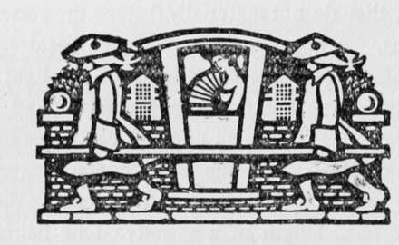

Types Of Lenses
Description
This section is from the book "The Barnet Book Of Photography", by Herts Barnet. Also available from Amazon: The Barnet Book Of Photography.
Types Of Lenses
A wide angle lens is one that passes light pencils of exceptional obliquity, and its image field will, therefore, cover an exceptionally large plate. It must have a short mount to allow very oblique complete pencils to pass, and must be specially well corrected, as aberration tends to increase with obliquity. Exceptionally wide angle lenses are usually slow, as very oblique pencils will only give decent definition with small stops ; big pencils are also more liable to be mutilated by the obstruction of the mount, which means a loss of light near the margins of the plate. As a rough guide to the angles called "wide" or "narrow," we may consider a lens to cover a wide angle when the greatest dimension of the plate that it covers is equal to or less than its focal length, while if the greatest length of the plate covered is less than two-thirds the focal length the angle is narrow. A wide angle lens can, of course, be used at a narrow angle on a small plate.
Doublet lenses consist of two separated lenses with a stop between; " single" lenses usually consist of several lenses in close contact with a stop on one side of the combination. "View" or "landscape" lenses are of the " single " variety, are usually very imperfectly corrected for astigmatism and distortion, and only cover a medium angle with a small stop; they are therefore slow. They are invariably inconstant, but the variations in aperture are so small that they may be disregarded excepting when copying or enlarging, for which purposes such lenses are not well adapted, though often used. Their titles suggest the work for which they are most suitable.
Doublets styled "Rectilinear," "Symmetrical," "Aplanáis," or " Euryscopes " are constant and corrected for most errors except astigmatism, which always exists in greater or less quantity. Most will cover a medium angle with f/8 and a moderately wide angle with a small aperture. Some will open out to fl 6, but will then only cover a very moderate angle. If the mount is short enough, a very wide angle can be covered with a small stop, but in such a case the marginal definition is somewhat imperfect. Anastigmats are the only lenses that will cover wide angles perfectly, and many of them will do so at a relatively large aperture. High rapidity and good correction over a large field are their characteristics, but it should be noted that cheaper types will do equally well if neither a wide angle nor extreme rapidity is required. A mid-angle lens that will work well at //8 is good enough for most ordinary purposes. The flatness of field that anastigmats possess is of advantage mainly in copying, and not by any means essential for other work. Apertures of f/6 and over are only required for extremely rapid shutter exposures or for short exposures in bad light. The Cooke, Aldis, Collinear, Planar, Unar, Tessar, Protar, and Homo-centric lenses are anastigmats, though the fact is not indicated by their names.
Portrait lenses are doublets of extreme rapidity (f/4 or thereabouts), highly corrected for direct pencils but not for oblique ones, the perfection of which is sacrificed for the sake of rapidity, and is not really of much moment in portraiture. They often show considerable distortion.
The Grun lens is of the most extreme rapidity, and is specially intended for short exposures indoors. The rapidity is gained by peculiar construction, and at the sacrifice of acute definition. It is a doublet lens filled with a special fluid, and is therefore heavy. Its advantages are, that it is apparently more rapid, and also gives greater depth than other lenses of similar aperture.
Uncorrected lenses are sometimes used for the sake of soft definition. Simple lenses with a stop are thus employed, while the " Bergheim" is a very special type of uncorrected doublet of adjustable focal length.
The Telephoto lens is one designed to work with a short extension of the camera and an extreme focal length. The focal length is adjustable, and when set to, say, three feet the camera extension may not exceed one foot, the principal point being a long way in front of the lens. The mount being very long, only a small angle is included, hence the lens can only be used on small plates, though it produces very large scale images. The only aberration likely to appear is distortion, and, though curvilinear effects are not often met with, perspective may be badly distorted with some patterns of the Telephoto. The Adon is a rapid variety of Telephoto lens of a rather more convenient pattern. All Telephoto lenses are very inconstant, so much so that with near objects the ordinary rules of exposure, etc, will not apply. Special rules are therefore adopted.
The lens is adjusted to produce an image on the required scale by altering the separation of the front and back combinations, the former being a positive doublet of ordinary type, and the latter a negative combination which magnifies the image formed by the front doublet. The ratio of magnification varies with every adjustment, but is easily determined with the aid of a scale on the lens mount. By considering first the action of the front lens alone, and then multiplying all essential factors (such as aperture No.) by the magnification, the effects of inconstancy are eliminated.
Supplementary lenses are single lenses added to ordinary photographic combinations to modify the focal length and size of the image. If themselves of great focal length and thin in substance, they do not materially disturb the corrections of the other lens. A negative lens increases focal length by slightly counteracting the convergency of the light pencils, while a positive lens has the opposite effect, and shortens the focal length. The change effected can be estimated by the following rules. Two lenses in contact have a focal length equal to the product of their focal lengths divided by the sum, the focal length of a negative lens being treated as a minus quantity. Two separated lenses have a focal length equal to the product of their focal lengths, divided by their sum minus the amount of separation, which is the distance between their principal points. Two single lenses close together are practically in contact, but a single lens cannot be placed in contact with an ordinary doublet of the " rectilinear " type; there must always be a separation equal to at least half the length of the doublet, wherever the supplementary lens is placed. The most convenient position for a supplementary lens is generally the front of the original lens, but a negative lens is best placed at the back, as a smaller extension of the camera is then required.
With a fixed focus camera unprovided with any focussing arrangement a positive lens can be added to shorten the focal length, and thus bring near objects into focus. A supplementary lens used for this purpose is often called a " magnifier." Its focal length should be equal to the distance of the near object, hence a set of magnifiers is generally required.
C. Welborne Piper.

Continue to:
- prev: Focussing Scales
- Table of Contents
- next: The Hand Camera
Tags
paper, print, negative, exposure, lens, development, camera, focus